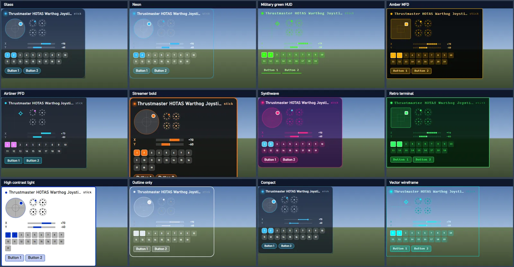

#Uključi/isključi overlay
DugmenapisanoPokreni HUD / Zaustavi HUD: pokreće HUD s izlazima označenim iznad: po potrebi čita uređaje, pronalazi pokrenutu igru i učitava njene dodjele.
Ponovni pritisak zatvara svaki izlaz.
HUD prikazuje vaše uređaje na ekranu dok igrate, kao overlay kontrolera kod streamera: slika palice se naginje s vašom palicom, ručice i ose se pomjeraju kao trake, držana dugmad svijetle sa svojim imenima, a red kaže šta pritisnuto dugme radi u pokrenutoj igri ("Gear Toggle"). Može se prikazivati iznad igre, u OBS-u ili oboje, svaki s vlastitim widgetima. Ova stranica je njegov dizajner.


flowchart LR D["Vaši uređaji"] --> P["HUD"] O["Vaše dodjele u<br/>igri"] --> P P --> S["Na mom ekranu"] P --> B["Stranica za OBS"] P --> W["Prozor za stream"]
Zaustavi HUD (isto dugme) ga zatvara. Sve što ovdje podesite se čuva i ponovo je tu nakon ponovnog pokretanja.
Povucite widget u pregledu da ga pomjerite; kliknite ga da ga promijenite desno. Rasporedi automatski ih stavlja uz dno: ručicu gasa i uređaje za lijevu ruku lijevo, pedale u sredinu, palicu za desnu ruku desno.


Prozor HUD-a je providan i ostaje iznad igara u prozoru i bez okvira. Klikovi prolaze kroz njega do igre. Nije na traci zadataka ni u Alt+Tab. Ekskluzivni prikaz preko cijelog ekrana ga skriva (ograničenje Windowsa): prebacite igru na način bez okvira. Red pritisnutog dugmeta imenuje radnju te igre i letjelice, na primjer "Weapon Release" u F-16C i "Fire guns" u IL-2.
Tri izlaza su međusobno nezavisna:
| Izlaz | Za koga | Kako |
|---|---|---|
| Na mom ekranu (iznad igre) | vi | providni prozor iznad igre |
| Stranica za OBS (Browser Source, providna) | vaš stream (preporučeno) | JoyPro poslužuje stranicu samo na ovom računaru; Kopiraj stavlja njenu adresu u međuspremnik |
| Prozor za striming (Window Capture) | striming s Window Capture | običan prozor (može biti iza igre) s providnom pozadinom ili pozadinom za chroma key |
Uklonite oznaku s Na mom ekranu da igrate s čistim ekranom dok stream i dalje prikazuje HUD, ili na svakom prikažite druge widgete: svaki widget ima dvije kvačice, monitor (vaš ekran) i OBS (stream). Pregled: Moj ekran / Stream mijenja šta dizajner prikazuje. Najviše osvježavanja u sekundi (15, 30 ili 60; 30 je glatko i lagano).
http://127.0.0.1:8765/hud).Stranica crta widgete označene za stream, na istim mjestima i u istim stilovima kao aplikacija, na pozornici od 1920 x 1080 skaliranoj na izvor. Port zauzima drugi program? Odaberite drugi pod Port i ponovo kopirajte adresu.


Umjesto toga Window Capture: označite Prozor za striming, odaberite pozadinu (providna, zelena, magenta, plava ili vaša boja). U OBS-u dodajte Window Capture s Capture Method: Windows 10 (1903 and up); uz boju dodajte filter Chroma Key u toj boji. Ako se providna pozadina u vašem OBS-u prikazuje crno, koristite Browser Source ili boju.
Kako OBS Browser Source dobija HUD: jedna stranica, zatim samo promjene.
| # | Ko | Šta se dešava |
|---|---|---|
| 1 | OBS | Browser Source otvara http://127.0.0.1:8765/hud. |
| 2 | JoyPro | Šalje stranicu: raspored, stilove i slike. |
| 3 | OBS | Otvara /hud/events. Ostaje otvoreno. |
| 4 | JoyPro | Šalje stanje (ose, dugmad, šta dugme radi), najviše 30 puta u sekundi i samo kad se nešto promijenilo. |
| 5 | JoyPro | Ponovo šalje raspored kad se promijene widgeti, mjesta ili stilovi. |
Widgeti navodi svaki uređaj plus zaglavlje, traku dodjela i widget letjelice. Učitaj uređaje ponovo ponovo čita povezane uređaje; Prikaži sve označava svaki widget za vaš ekran; Rasporedi automatski i Vrati mjesta ih postavljaju na mjesto.
Po widgetu (kliknite ga u pregledu ili na listi):


Widget letjelice: palica, ručica gasa, traka hoda gasa, položaj palice, kontrole svijetle, držane kontrole po imenu; Letjelice (Automatski: letjelica kojom letite ili bilo koji skup slika na ovom računaru) i Pomjera se sa (palica i ručica gasa koje je pomjeraju). Njene slike dolaze iz vlastitih slika kokpita igre (Kokpiti > Napravi slike iz mojih igara ili paket slika), inače iz JoyPro-ovog crteža prave drške.
Stil ima 40 predložaka: Staklo, Neon, Minimalno, čisti (Mutno staklo, svijetlo, Streamer, čisto, Streamer, upadljivo, Kompaktno, Veliki tekst, Pastelno, Samo obrisi), ekrani kokpita (Vojni zeleni HUD, Ćilibarni MFD, PFD putničkog aviona, Stakleni kokpit, Noćno gledanje, Crveno osvjetljenje kokpita, Vektorski žičani model, Retro terminal, Warbird, Hologram), igre i žanrovi (Svemirska narandžasta, Holo cijan, Cyberpunk, Synthwave, Neonska roza, Trkačko, Taktička pješčana, Mornarsko plava i zlatna, Stealth, Duh), teme boja (Arktik, Pustinja, Okean, Zalazak sunca, Kraljevsko, Karbon) i čitljivost (Visoki kontrast, Visoki kontrast, svijetlo, Jednobojno, Jednobojno svijetlo). › prelazi na sljedeći.


Ispod: boje naglaska jednim klikom, Akcent, Pritisnuto i Neprozirnost, zatim opcije izgleda po elementu: Kartice (pozadina, ivica, uglovi, sjena), Tekst (font, veličina, razmak slova, boje, Podebljani nazivi), Prikaz palice (prsten, kvadrat, križić, radar, tačka; veličina, sjaj), Trake i ručice (oblici, visine, prazni dio) i Dugmad i oznake (oblici). Promijenjena opcija pretvara stil u „vlastiti izgled (promijenjen)”: Sačuvaj stil ga čuva pod vašim imenom, Poništi promjene vraća se na predložak, Izvezi stil... / Uvezi stil... ga dijele kao datoteku, Obriši uklanja vaš vlastiti stil.
Šta dugme radi: koliko redova, koliko dugo ostaju (sekunde), veličina fonta, Prikaži uređaj i dugme i Samo dok igra radi. Klik prolazi kroz propušta klikove miša kroz prozor HUD-a (primjenjuje se kada se HUD pokrene).
JoyPro pronalazi pokrenutu igru po njenom procesu (DCS, IL-2, Star Citizen i svaka druga igra koju podržava) i prikazuje samo dodjele te igre. DCS treba i letjelicu: odaberite je pod DCS letjelica ili Instaliraj DCS hook kako bi DCS JoyPro-u javljao letjelicu na početku svake misije (mala Lua datoteka plus jedan zaštićeni red u Export.lua, prethodno sigurnosno kopiran; Ukloni vraća datoteku bajt po bajt; prvo zatvorite DCS). Provjeri kaže da li je hook instaliran.


View model: MainWindowViewModel.Hud.cs (uređaji, widgeti, raspored), MainWindowViewModel.HudStyles.cs (predlošci, vlastiti stilovi, uvoz/izvoz), MainWindowViewModel.HudStream.cs (izlazi, stranica za stream, widget letjelice), MainWindowViewModel.HudAxes.cs (ose palice), MainWindowViewModel.Overlay.cs (pokretanje/zaustavljanje, pokrenuta igra, redovi dugmadi, DCS hook). Prikazi: Views/HudWindow.axaml, Views/Controls/HudSurface.axaml, HudElements.cs, HudPanel.cs. Predlošci: Models/HudStylePresets.cs.
engine hud devices daje za svaki povezani uređaj model, vrstu, ruku, sliku proizvoda, ose s njihovom ulogom, dugmad s imenima i id-ovima kontrola (Controls, za widget letjelice) te sliku rasporeda s položajima dugmadi.engine overlay map (--game, --plane, --unit): dodijeljena dugmad s modifikatorima i nazivima. Dodjela s modifikatorima se prikazuje dok se njeni modifikatori drže; pobjeđuje dodjela s najviše odgovarajućih modifikatora.engine overlay dcs-hook status / install / remove (--path, --dry-run): Scripts\JoyProOverlay.lua plus jedan red omotan u pcall u Export.lua; DCS šalje tip jedinice na 127.0.0.1:1992 (UDP). Hook poziva izvozne funkcije drugih skripti (SRS, Tacview) koje zamjenjuje.Services/HudStreamServer.cs, HudStreamHub.cs, Resources/hud-stream.html; vezan samo na 127.0.0.1, zahtjevi s drugim imenom hosta se odbijaju. GET /hud (stranica), /hud/events (Server-Sent Events: layout, state), /hud/img/<id> (slike kao PNG), /hud/state (JSON). Bez povezane stranice samo osluškuje.Services/HudInputPump.cs čuva samo najnoviji izvještaj po uređaju i primjenjuje ih odabranom brzinom; elementi se ponovo iscrtavaju samo pri promjeni; ništa se ne alocira po izvještaju; slike se izrezuju jednom (drške letjelica visoke 480 px). Mjereno dugotrajnim testom HUD-a prema budžetima za CPU, alokaciju i memoriju.%APPDATA%\JoyPro2\hud.json (mjesta, veličine, kvačice po widgetu za ekran i stream, stil sa svim opcijama, vlastiti stilovi, izlazi, port, pozadina, brzina osvježavanja). Datoteke stilova: *.joypro-hudstyle.json ("format": "joypro-hud-style").Referenca: hud.
Dokumentacija funkcija iza ove stranice, generisana iz repozitorija:
42 kontrola, pročitanih iz izvornog koda programa: 42 napisano, 0 s činjenicama iz izvornog koda (opis alata, komentar u kodu, poziv engine-a), 0 još treba proširiti.
Pokreni HUD / Zaustavi HUD: pokreće HUD s izlazima označenim iznad: po potrebi čita uređaje, pronalazi pokrenutu igru i učitava njene dodjele.
Ponovni pritisak zatvara svaki izlaz.
Opis alata Providni HUD iznad igre. Poništite izbor da vam ekran ostane čist dok stream i dalje prikazuje HUD.
Prikazuje HUD kao providan prozor iznad igre.
Uklonite oznaku da vaš ekran ostane čist, dok stream i dalje prikazuje HUD.
Opis alata JoyPro poslužuje HUD kao web stranicu samo na ovom računaru. U OBS-u dodajte Browser Source s ovom adresom: pozadina je providna, vlastiti CSS nije potreban.
Dok HUD radi, JoyPro ga poslužuje kao web stranicu samo na ovom računaru, za OBS Browser Source: providna pozadina, bez vlastitog CSS-a.
Kada je označeno, ispod se prikazuju adresa s Kopiraj i Port.
Kopira adresu OBS stranice u međuspremnik.
U OBS-u: Sources > + > Browser, zalijepite je kao URL, širina 1920, visina 1080.
Opis alata Zaseban prozor, ne u prvom planu: smije biti iza igre. U OBS-u: Window Capture s metodom snimanja Windows 10 (1903 and up); uz boju za chroma key dodajte filter Chroma Key.
Dok HUD radi, otvara vlastiti prozor za OBS Window Capture, s providnom pozadinom ili bojom za chroma key odabranom ispod.
U OBS-u: metoda snimanja Windows 10, i filter Chroma Key za boju.
Oznaka monitora widgeta na listi: prikazuje ga na vašem ekranu.
OBS oznaka widgeta na listi: prikazuje ga u streamu.
Ponovo čita povezane uređaje: novi uređaji dobijaju widget, slike i imena dugmadi se osvježavaju.
Koristite ovo nakon priključivanja uređaja.
Označava svaki widget za vaš ekran. Uklonite oznaku s onih koje ne želite na listi.
Opis alata Ručica gasa i lijeva ruka lijevo, pedale u sredini, desna palica desno, duž dna
Postavlja widgete uređaja prikazane na vašem ekranu duž dna: ručicu gasa i uređaje za lijevu ruku lijevo, pedale u sredinu, palicu za desnu ruku desno; ono što ne stane ide red više.
Nova mjesta se pamte.
Vraća svaki widget na njegovo zadano mjesto i veličinu; ono što svaki widget prikazuje ostaje.
Opis alata Sljedeći stil
Prebacuje HUD na sljedeći unos liste Stil.
Daje stilu ovu boju naglaska. HUD je odmah preuzima; stil se prikazuje kao "vlastiti izgled" dok ga ne sačuvate.
Prikazuje imena widgeta podebljano. Dio stila: mijenja ga u "vlastiti izgled" dok se ne sačuva.
Čuva trenutni dizajn kao vaš vlastiti stil pod imenom upisanim pored i postavlja ga kao stil HUD-a.
Ime predloška se odbija; vaš stil istog imena se zamjenjuje.
Čita datoteku stila i pravi od nje jedan od vaših stilova i stil HUD-a.
Ime koje već koristite dobija broj.
Čuva trenutni dizajn kao datoteku stila za dijeljenje ili čuvanje; HUD se ne mijenja.
Opis alata Nazad na stil odabran iznad
Vraća dizajn na stil koji ste imali prije ručnih promjena: posljednji odabrani, sačuvani ili uvezeni stil.
Briše odabrani vlastiti stil. Widgeti koji su ga koristili vraćaju se na stil HUD-a; HUD zadržava svoj trenutni izgled.
Dodaje uređaj i dugme ispod svakog reda Šta dugme radi.
Prikazuje redove Šta dugme radi samo dok radi podržana igra; isključeno, prikazuju se i na radnoj površini.
Klikovi miša prolaze kroz prozor HUD-a do igre.
Primjenjuje se kada se HUD pokrene: nakon promjene ovoga zaustavite ga i ponovo pokrenite.
Instalira DCS hook: Scripts\JoyProOverlay.lua i jedan zaštićeni red u Export.lua.
Prvo zatvorite DCS.
Ponovo uklanja DCS hook: Export.lua je bajt po bajt kao prije.
Prvo zatvorite DCS.
Provjerava je li DCS hook instaliran u DCS folderu iz Postavki.
Ne mijenja ništa.
Moj ekran / Stream: šta prikazuje pregled dizajnera, widgete označene za vaš ekran ili one označene za stream.
Mijenja se samo pregled; izbor se pamti za sljedeće pokretanje.
Prikazuje odabrani widget na vašem ekranu.
Prikazuje odabrani widget u streamu: na OBS stranici i u prozoru za stream.
Prikazuje ime uređaja na njegovom widgetu.
Widget zaglavlja igre: prikazuje sliku igre ili DCS letjelice pored njenog imena.
Prikazuje vrstu uređaja ispod njegovog imena.
Prikazuje sliku uređaja.
Naginje i zakreće sliku uređaja s palicom, kao da se stvarna palica pomjera.
Widget uređaja: držana dugmad svijetle. Widget letjelice: kontrola letjelice koju predstavlja vaše pritisnuto dugme svijetli na njenoj palici ili ručici gasa.
Widget uređaja: držana dugmad prikazuju se kao oznake s imenima iz kataloga uređaja.
Widget letjelice: držane kontrole letjelice po imenu ispod drški.
Widget uređaja: svaka osa i ručica pomjera se kao traka.
Widget letjelice: traka pored ručice gasa s položajem vaše ručice.
Ispisuje ime svake ose pored njene trake.
Ispisuje vrijednost svake ose pored njene trake.
Prikazuje element palice: tačku u krugu na položaju palice, s crticom za zakretanje.
Prikazuje hatove; pritisnuti smjer svijetli.
Widget letjelice: prikazuje sliku vlastite palice letjelice, koja se naginje s vašom palicom.
Widget letjelice: prikazuje sliku vlastite ručice gasa letjelice, koja klizi s prvom ručicom vašeg gasa.